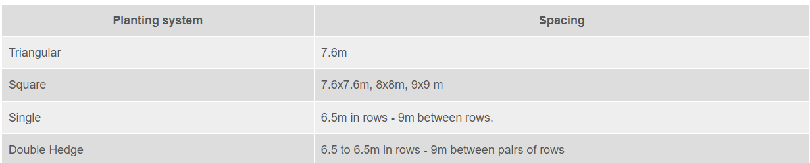

The coconut palm is referred to as 'Kalpavriksha' - the 'tree of heaven' as each and every part of the palm is useful to mankind in one way or other. It provides food, drink, fuel and timber. Millions of families in India depend on coconut for their livelihood either directly or indirectly India ranks third in area and production of coconut in the world. The four southern states viz . Kerala, Tamil Nadu, Karnataka and Andhra Pradesh are the major coconut producing states in India accounting for more than 90 per cent of area and production. There is a great scope for enhancing the productivity of coconut through adoption of scientific cultivation technologies, which are described here under.
The coconut palm is found to grow under varying climatic and soil conditions. It is essentially a tropical plant, growing most!y between 20° N and 20° S latitudes. The ideal temperature for coconut growth and yield is 27 ± 5° C and humidity > 60 per cent. The coconut palm grows well upto an elevation of 600 m above MSL. However, near the equator, productive coconut plantations can be established up to an elevation of about 1000 m above MSL. The palms tolerate wide range in intensity and distribution of rainfall. However, a well distributed rainfall of about 200 cm per year is the best for proper growth and higher yield. In areas of inadequate rainfall with uneven distribution, irrigation is required.
Basically, coconut cultivars are classified into two groups viz., tall and dwarf.The tall cultivars that are extensively grown are the West Coast Tall and East Coast Tall. The dwarf variety is shorter in stature and its life span is short as compared to the tall. Tall x Dwarf (TxD), Dwarf x Tall (DxT) are the two important hybrids.There are 10 different combination of hybrids, developed by Kerala Agriculture University and Tamil Nadu Agriculture University and released for commercial cultivation. They are high yielders under the good management conditions. Laccadive Ordinary, Andaman Ordinary, Philippines, Java, Cochin-China, Kappadam etc. are the other tall cultivars under cultivation.
The coconut palm is found to grow under varying climatic and soil conditions. It is essentially a tropical plant, growing most!y between 20° N and 20° S latitudes. The ideal temperature for coconut growth and yield is 27 ± 5° C and humidity > 60 per cent. The coconut palm grows well upto an elevation of 600 m above MSL. However, near the equator, productive coconut plantations can be established up to an elevation of about 1000 m above MSL. The palms tolerate wide range in intensity and distribution of rainfall. However, a well distributed rainfall of about 200 cm per year is the best for proper growth and higher yield. In areas of inadequate rainfall with uneven distribution, irrigation is required.
Coconut is propagated through seedlings raised from selected seednuts. Generally 9 to 12 month old seedlings are used for planting. Select seedlings, which have 6-8 leaves and 10-12 cm collar girth when they are 9-12 month old. Early splitting of leaves is another criteria in the selection of coconut seedling.
Shallow soils with underlying hard rock, low lying areas subject to water stagnation and clayey soils are to be avoided. Proper supply of moisture either through well distributed rainfall or through irrigation should be ensured before planting.
On slopes and in areas of undulating terrain, prepare the land by contour terracing or bunding. In low-lying areas mounds are to be formed at planting site to a height of at least 1m above water level. In reclaimed ‘kayal’ areas, seedlings are planted on field bunds.In loamy soils with low water table, a pit size of 1mx1mx1m is recommended. In laterite soils with underlying rocks, take larger pits of size 1.2m x 1.2m x 1.2m. In sandy soils the size need not exceed 0.75m x 0.75m x 0.75 m.Spacing depends upon the planting system, soil type etc. In general the following spacing are recommended under different planting system in sandy and laterite soils.
